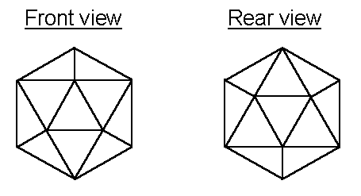

by Ronald K. Hoeflin
P.O. Box 539, New York, NY 10101
Published with permission from the author
Correction, 10-12-99: Problem 9 "Fox hunder" was a typo (should be "Fox hunter")
Correction, 10-12-99: Problems 3 and 16 were missing double colons "::"
Correction, 10-13-99: Problem 12 had an extra colon.
Correction, 1-27-00: Problem 13 was flawed. The analogy was given as:
32 : Cousin :: 6 : ?
1. You can consult books but not other people or computer aids of any kind.
2. Until the end of 1999 (Dec. 31), there is a $10 scoring fee. After that the fee is $15. Checks or money orders are payable to "Ronald K. Hoeflin" at P.O. Box 539, New York, NY 10101. Checks should be payable in U.S. dollars through any U.S. bank.
3. There is no time limit except Dec. 31 for those seeking an official ranking in this "Smartest Person in the World" contest. Revised or additional answers will not be accepted after your initial submission of answers. Answers received after Dec. 31 will not be considered eligible for an official ranking, only a score that can be compared to a graph showing the scores achieved by "official" (i.e., on time) participants.
4. Rankings will be by graph, with your score circled, e.g.:
Each verbal problem will be counted one point and each nonverbal problem four points, for a total of 40 points maximum possible. Scores wil be sent out in January so that graphs showing the distribution of all official scores can be included in each score report. No IQ or percentile will be provided.
5. You should be sure to include your name and address on the sheet containing your answers. These will be kept confidential. If you would be willing for your initials to be put on a website screen alongside your ranking, please indicated this on your answer sheet as follows:

I plan to design more tests like this one if a sizeable number (say 100 or more) submit answers to this test. The frequency could vary from once a month to once a year.
1. Armstrong : Astronaut :: Jason : ?
2. Horse and Donkey : Mule :: Question mark and Exclamation point : ?
3. 753 : 776 :: Rome : ?
4. Roosevelt : New :: Truman : ?
5. Right, Rite, Write : Wright :: New, Nu, Knew : ?
6. 9 : 361 :: Tic-tac-toe : ?
7. Dawn : Rosy-fingered :: Sea : ?
8. Year : Light :: Second : ?
9. Fox hunter : Unspeakable :: Fox : ?
10. a : bnn :: y : ?
11. Sartre : Nothingness :: Heidegger : ?
12. RD : 22 :: CP : ?
13. 42 : Cousin :: 6 : ?
14. Where late the sweet ____ sang : birds :: Bare ruin'd ____ : ?
15. Small : Large :: Omicron : ?
16. ____ me as I am : Paint :: ____ and all : ?
17. 5,280 : Mile :: 43,560 : ?
18. I keep six honest serving men
(They taught me all I ____) : Knew ::
Their names are ... and ... and ...
And ... and ... and ____ : ?
19. A ____ consistency : Foolish :: Is the ____ of little minds : ?
20. Home we bring our bald ____ : ? ::
Romans lock your wives away,
All the bags of gold you lent him
Went his Gallic ____ to pay : tarts
Suppose you have the following 3 by 3 grid on a flat surface:

If just one square is painted black, then three distinct pattterns are possible, namely:

In other words, two patterns are identical if they can be made to coincide simply by rotating one 3 by 3 grid without taking it off the flat surface (i.e., without rotating it through the third dimension).
21. How many distinct patterns are possible if two of the nine blanks are painted black rather than one?
22. How many distinct patterns are possible if three of the nine blanks are painted black?
Now suppose each of the six sides of a cube is divided into four identical-sized squares as shown:

23. If any two of the 24 squares are painted black, how many distinct patterns are possible (where each pattern consists of all 24 squares considered simultaneously, not just the 12 squares visible at any one time from one view of the cube)?
Now consider a dodecahedron, the front and rear views of which are shown below:

24. If any two sides are painted black, how many distinct patterns are possible (including all 12 sides in each pattern, not just the 6 sides visible at any one time from one view)?
Finally consider an icosahedron, the front and rear views of which are shown below:

25. If any two sides are painted black how many distinct patterns are possible (counting all 20 sides in each pattern)?
Note: for the cube, dodecahedron, and icosahedron, two patterns are to be considered identical (and hence counted as one pattern) if they can be made to coincide by rotating one of the solids as a single solid object to match it with the second solid. It might help to imagine you are blind and that the blackened sides are replaced by chess pawns glued to the sides, so that the patterns can be compared entirely by touch (all sides simultaneously) rather than by sight.
Return to the Uncommonly Difficult I.Q. Tests page.